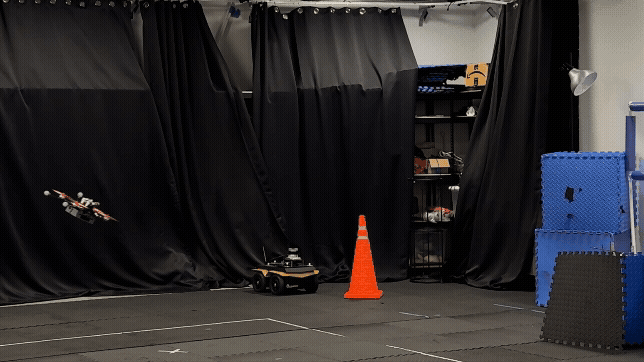
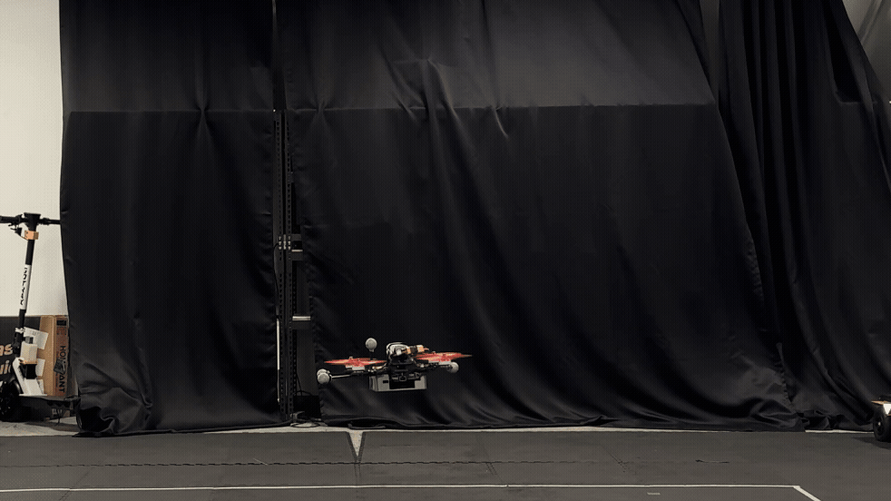
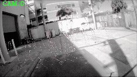
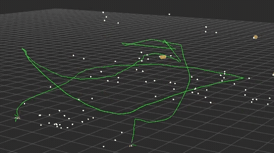
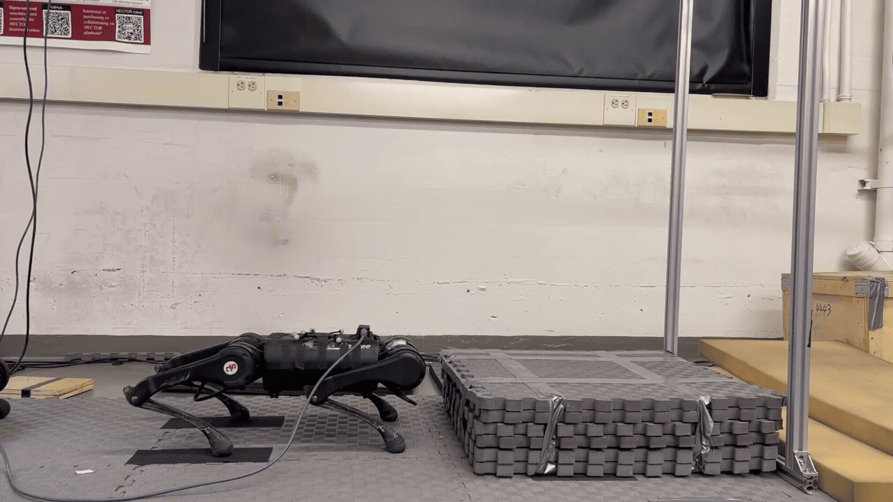
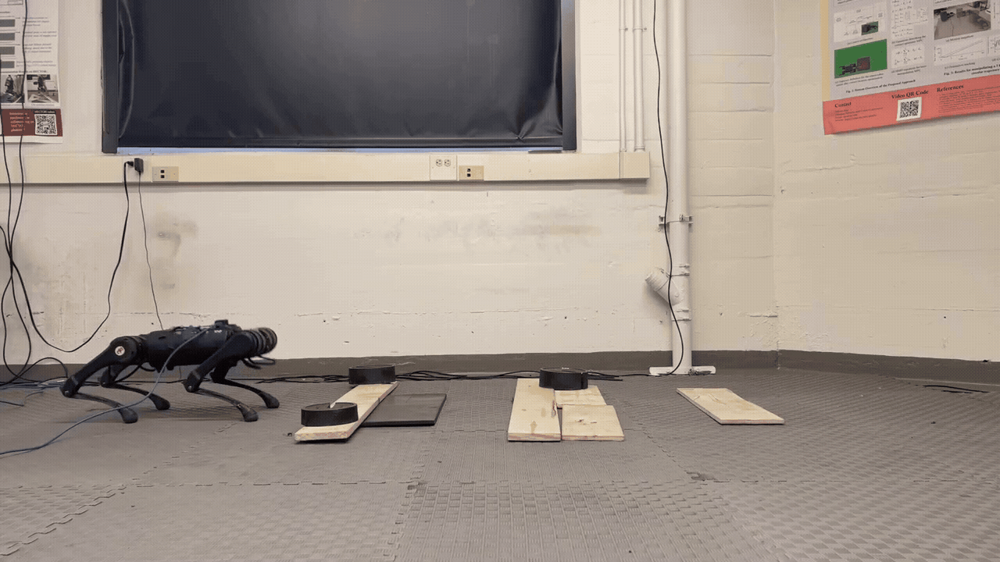
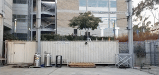
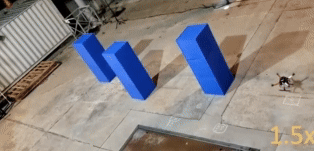
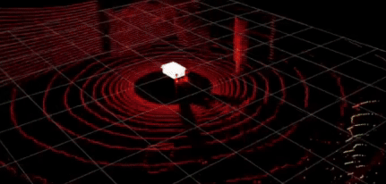
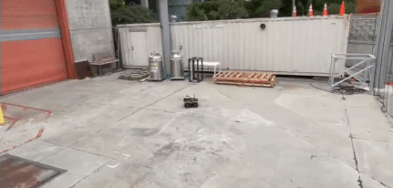

Research Interests
- Robotics
- Artificial Intelligence
- Machine Learning
Abdullah Altawaitan
Assistant Professor at Kuwait University
I am an Assistant Professor in the Department of Electrical Engineering at Kuwait University. I received my Ph.D. in Electrical Engineering (Intelligent Systems, Robotics, and Control) from the University of California San Diego in 2026, where I worked with Prof. Nikolay Atanasov. My dissertation focused on Online Model Learning and Control for Autonomous Robot Navigation. Prior to that, I worked as a Project Engineer at Honeywell. I received my B.S. and M.S. degrees in Electrical Engineering from Arizona State University in 2017 and 2019, respectively.
Updates
-
Jul’26
Our paper, Adapting Neural Robot Dynamics on the Fly for Predictive Control, has been accepted to the 65th IEEE Conference on Decision and Control (CDC).
-
Oct’25
Our paper, Port‑Hamiltonian Neural ODE Networks on Lie Groups for Robot Dynamics Learning and Control, has received the 2025 Best Paper Award from the IEEE RAS Technical Committee on Robot Control.
-
Sep’25
Our paper, Learned IMU Bias Prediction for Invariant Visual Inertial Odometry, has been accepted to IEEE Robotics and Automation Letters (RA‑L).
-
May’25
Our paper, Port‑Hamiltonian Neural ODE Networks on Lie Groups for Robot Dynamics Learning and Control, has received an Honorable Mention for the 2024 IEEE Transactions on Robotics (T‑RO) King‑Sun Fu Best Paper Award.
-
Nov’24
Our paper, Variable‑Frequency Model Learning and Predictive Control for Jumping Maneuvers on Legged Robots, has been accepted to IEEE Robotics and Automation Letters (RA‑L).
-
Jun’24
Our paper, Port‑Hamiltonian Neural ODE Networks on Lie Groups for Robot Dynamics Learning and Control, has been accepted to IEEE Transactions on Robotics (T‑RO).
-
Jan’24
Our paper, Hamiltonian Dynamics Learning from Point Cloud Observations for Nonholonomic Mobile Robot Control, has been accepted to the 2024 IEEE International Conference on Robotics and Automation (ICRA).
Research
-


Adapting Neural Robot Dynamics on the Fly for Predictive Control
IEEE Conference on Decision and Control (CDC), 2026.
-


Learned IMU Bias Prediction for Invariant Visual Inertial Odometry
IEEE Robotics and Automation Letters (RA‑L), 2025.
- @article{altawaitan2025learned, title = {Learned IMU Bias Prediction for Invariant Visual Inertial Odometry}, author = {Altawaitan, Abdullah and Stanley, Jason and Ghosal, Sambaran and Duong, Thai and Atanasov, Nikolay}, journal = {IEEE Robotics and Automation Letters (RA-L)}, year = {2025}, volume = {10}, number = {11}, pages = {11872-11879}, doi = {https://doi.org/10.1109/LRA.2025.3617733} }
-


Variable‑Frequency Model Learning and Predictive Control for Jumping Maneuvers on Legged Robots
IEEE Robotics and Automation Letters (RA‑L), 2025.
- @article{nguyen2025variable, title = {Variable-Frequency Model Learning and Predictive Control for Jumping Maneuvers on Legged Robots}, author = {Nguyen, Chuong and Altawaitan, Abdullah and Duong, Thai and Atanasov, Nikolay and Nguyen, Quan}, journal = {IEEE Robotics and Automation Letters (RA-L)}, year = {2025}, volume = {10}, number = {2}, pages = {1321-1328}, doi = {https://doi.org/10.1109/LRA.2024.3519864} }
- Video
- Code
-


Port‑Hamiltonian Neural ODE Networks on Lie Groups for Robot Dynamics Learning and Control
IEEE Transactions on Robotics (T‑RO), 2024.
- Best Paper Award — 2025 IEEE RAS TC on Robot Control
- Honorable Mention — 2024 IEEE T‑RO King‑Sun Fu Best Paper Award
- @article{duong2024port, title = {Port-Hamiltonian Neural ODE Networks on Lie Groups for Robot Dynamics Learning and Control}, author = {Duong, Thai and Altawaitan, Abdullah and Stanley, Jason and Atanasov, Nikolay}, journal = {IEEE Transactions on Robotics (T-RO)}, year = {2024}, volume = {40}, pages = {3695-3715}, doi = {https://doi.org/10.1109/TRO.2024.3428433} }
- Video
- Website
-


Hamiltonian Dynamics Learning from Point Cloud Observations for Nonholonomic Mobile Robot Control
IEEE International Conference on Robotics and Automation (ICRA), 2024.
- @inproceedings{altawaitan2024hamiltonian, title = {Hamiltonian Dynamics Learning from Point Cloud Observations for Nonholonomic Mobile Robot Control}, author = {Altawaitan, Abdullah and Stanley, Jason and Ghosal, Sambaran and Duong, Thai and Atanasov, Nikolay}, booktitle = {IEEE International Conference on Robotics and Automation (ICRA)}, year = {2024}, pages = {16937-16944}, doi = {https://doi.org/10.1109/ICRA57147.2024.10610395} }
- Video
- Website
Teaching
-
Linear Circuit Analysis
- FA’26
-
Introduction to Digital Signal Processing
- FA’26